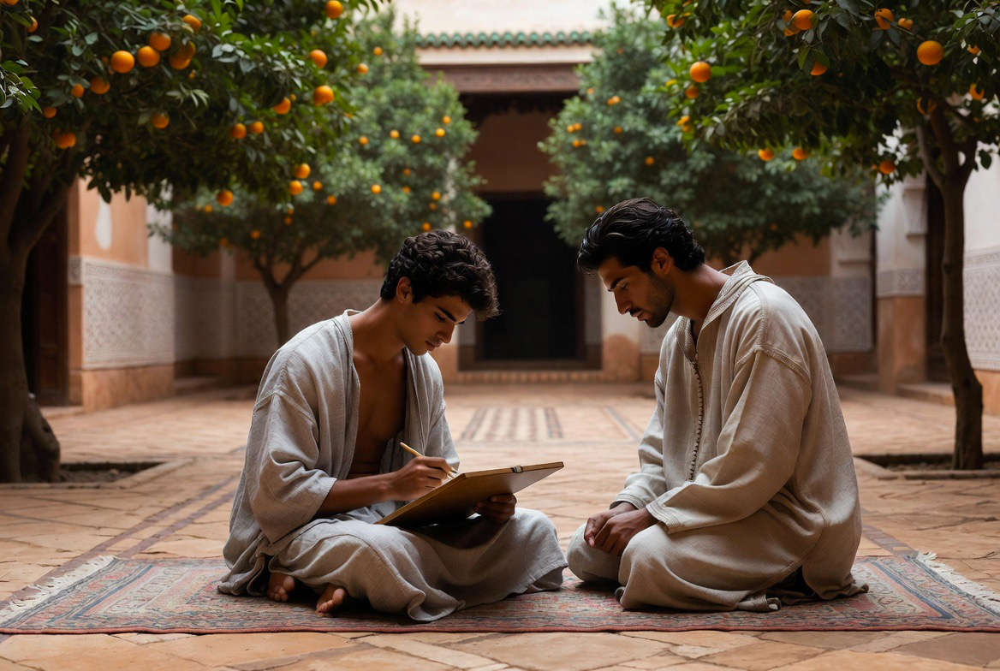
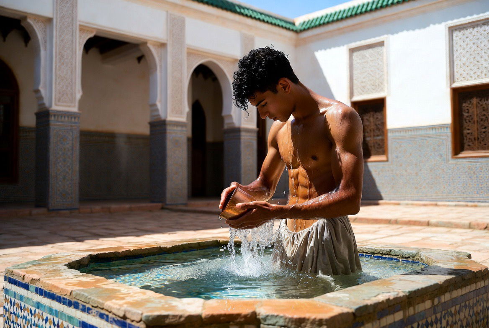
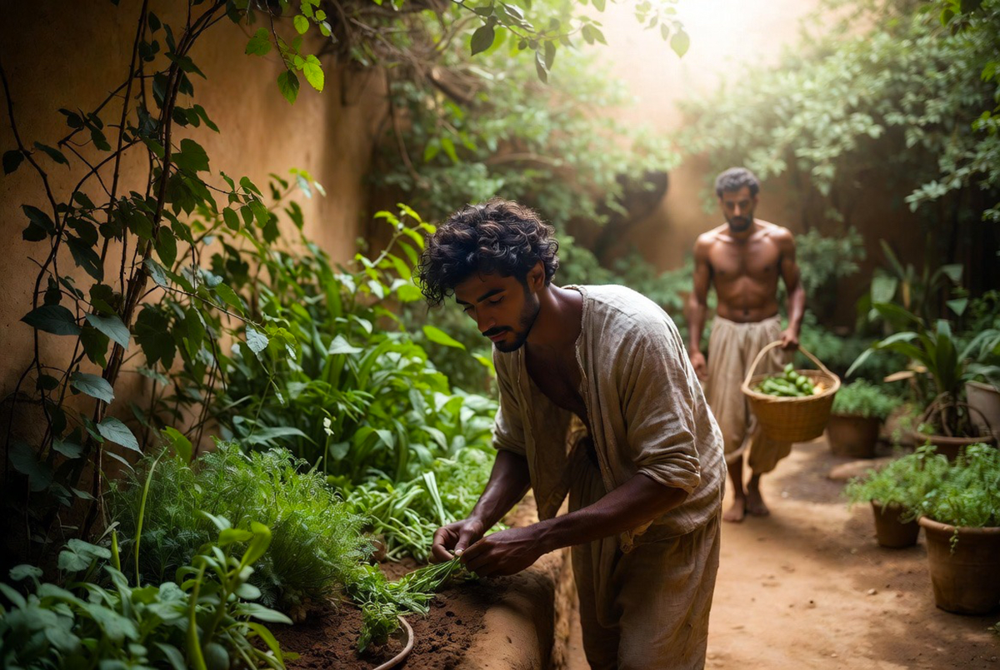

RIYĀḌ
Jardin & Potager
Le jardin n’est pas un décor. C’est un espace vivant, ordonné et productif, fidèle à la tradition du riyāḍ.

La structure du riyāḍ
Quatre parterres, bassin central, axes, eau, ombre et parfum.

Les plantes du jardin principal

Agrumes
Orangers amers et citronniers. Ombre et parfum.

Mirto (arrayán)
Myrtus communis. Emblème des jardins andalous.
Jasmin
Parfum du soir le long des galeries.

Grenadier & figuier
Arbres de la tradition méditerranéenne.
Cyprès
Élancement vertical, axes, silence.

Aromatiques
Menthe, romarin, thym, lavande, sauge.
ESPACE RÉSERVÉ
Le jardin secret
Roses, lys, jasmin de nuit, espèces rares du bustān. Parfum plus fort, ombre plus épaisse.
Lieu de retenue et de maturité.
Le potager
Légumes, herbes, fruitiers. Le travail de la terre fait partie de la formation.
Le jardin du Riad est un ordre vivant. Ceux qui y passent apprennent à voir lentement.